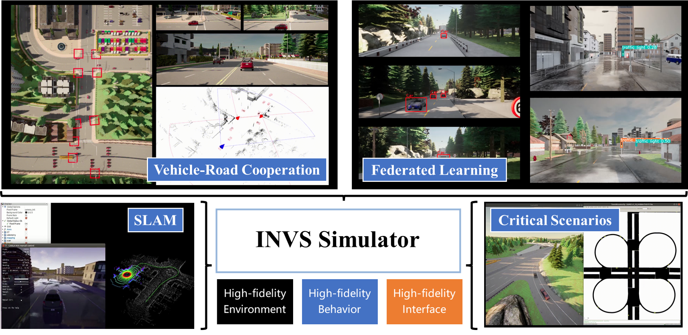
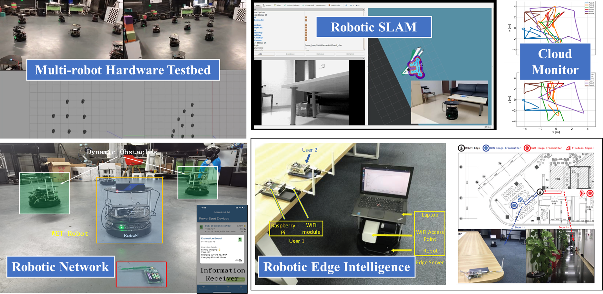

Shuai Wang (王帅) |
Dr. Shuai Wang received the B.Eng. and M.Eng. degrees from the Beijing University of Posts and Telecommunications, in 2011 and 2014 respectively, and the Ph.D. degree (P.K.Yu Fellowship) in Electrical and Electronic Engineering from the University of Hong Kong in 2018. Currently, he is an Associate Professor at Shenzhen Institute of Advanced Technology (SIAT), Chinese Academy of Sciences (CAS).
Shuai works on the intersection of robotics and communications, with an emphasis on leveraging machine learning, nonlinear optimization, and virtual-reality integration to advance the efficiency and robusness of autonomous perception, planning, and communication systems in open scenarios. He has published more than 80 papers on top journals and conferences, and 8 patents, 1 standard, 1 white paper. He has published 25 JCR Q1 SCI papers as first or corresponding author, with 1200+ citations in Google Scholar (My Google Scholar, My Research Gate). He is the PI of more than 10 projects from both goverments and industries. He is currently a Senior Member of IEEE, and an Associate Editor of IEEE Open Journal of the Communications Society.
Shuai has been selected into the Chinese Academy of Sciences Talent Program and the Shenzhen Overseas High-Level Talent Program. He received the Best Paper Awards from IEEE ICC in 2020, IEEE ComSoc SPCC Committee in 2021, and IEEE ICDCS Workshops in 2023. He is a recipient of the First Prize of National ‘‘Bloom Cup’’ 5G Industrial Competition in 2022, the Outstanding Contribution Award of IEEE ISAC-ETI WiFi Sensing in 2022, the IEEE ICCCS Young Scientist Award in 2023, the Second Prize of Shenzhen Science and Technology Progress Award in 2023, and the Frize Prize of ICT China Industry Application in 2023. He served as a Symposium or Workshop co-chair of WoCC 2022, IJCAI 2023, CCID 2023, WCNC 2024, and more recently, as the vice-chair of Grandprix Metaverse Autonomous Driving Challenge 2023 (for more details about the challenge please see: https://contests.cis.um.edu.mo/meta_racing_2023/).
Some of my current researches are listed below.
Optimization and implementation of connected autonomous systems
Localization, perception, navigation, and communication of swarm robots
Efficient communications in edge intelligence systems
|  |
|  |
Find out more at:
National Natural Science Fundation of China (NSFC), General Program, PI
Topic: Virtual-reality integration for autonomous driving
National Natural Science Fundation of China (NSFC), Youth Program, PI
Topic: Large-scale edge intelligence systems
Chinese Academy of Sciences, Hundred-Talent Program, PI
Topic: Virtual-reality integration for robotics
The Science and Technology Development Fund (FDCT) of Macao, General Program, Co-PI
Topic: Virtual-reality integration for robotics
Direct Drive Tech (DDT) Cooperation Project, PI
Topic: Navigation and simulation for wheel-legged robots
Guangdong Laboratory of Artificial Intelligence and Digital Economy, Open Research Fund, PI
Topic: Federated learning autonomous driving
Guangdong Basic and Applied Basic Research Project, Key Program, Co-PI
Topic: V2X simulation
Guangdong Universities Youth Innovative Talent Project, PI
Topic: Edge robotics
Shenzhen Fundamental Research Project, General Program, PI
Topic: Communication for edge intelligence
Shenzhen Science and Technology Project, Youth Program, PI
Topic: Communication for autonomous driving perception
SUSTech-Huawei Cooperation Project, Co-PI
Topic: WIFI sensing
Shenzhen Institute of Advanced Technology, Excellent Young Scholars, PI
Topic: Robotics
First Prize, ICT China Industry Application Award, 2023
Second Prize, Shenzhen Science and Technology Progress Award, 2023
Best Student Paper Award, IEEE ICDCS Workshop on SocialMeta, 2023
IEEE ICCCS Young Scientist Award, 2023
WiFi Sensing White Paper Outstanding Contribution Award, 2022
First Prize, National 5G Industrial Competition, 2022
Third Prize, National 5G Industrial Competition, 2022
Best Paper Award, Radio Communications Technology, 2021
Best Paper Award, IEEE ComSoc SPCC Committee, 2021
Best Paper Award, IEEE International Conference on Communications, 2020
Shenzhen Overseas High-Level Talent Program, 2019
Exemplary Reviewer for the IEEE Transactions on Wireless Communications
Exemplary Reviewer for the IEEE Wireless Communications Letters
HKU P.K.Yu Scholarship
First Prize, 7th National Graduate Electronics and Information Contest
National Graduate Scholarship
Second Prize, 8th National Graduate Electronics Design Contest
Associate Editor, IEEE Open Journal of the Communications Society
Senior Member, IEEE
Senior Member, China Institute of Communications
Workshop Co-Chair, WCNC, 2024
Vice Chair, Grand Prix Metaverse Autonomous Driving Challenge 2023
TPC Chair, CCID, 2023
Workshop Co-Chair, IJCAI, 2023
Guest Editor, Sustainability
Guest Editor, Electronics
Guest Editor, Frontiers in Communications and Networks
TPC member, IEEE ICDCS Workshop, 2023
TPC member, IEEE ICC 2023
TPC member, IEEE TECON 2022
TPC member, IEEE PIMRC 2022
Symposium Chair, IEEE WoCC 2022
Founding Member, ISAC-ETI
Session chair, IEEE WCNC 2021
TPC member, IEEE PIMRC 2021
Session chair, IEEE ICC 2019
Session chair, IEEE ICASSP 2019
S. Wang, C. Li, D. W. K. Ng, Y. C. Eldar, H. V. Poor, Q. Hao, and C. Xu, "Federated deep learning meets autonomous vehicle perception: Design and verification," IEEE Network, vol. 37, no. 3, pp. 16-25, 2023. [preprint]
S. Wang, R. Han, Y. Hong, Q. Hao, M. Wen, L. Musavian, S. Mumtaz, and D. W. K. Ng, "Robotic wireless energy transfer in dynamic environments: System design and experimental validation," IEEE Communications Magazine, vol. 60, no. 3, pp. 40-46, Mar. 2022.
S. Wang, Y. Hong, R. Wang, Q. Hao, Y.-C. Wu, and D. W. K. Ng, "Edge federated learning via unit-modulus over-the-air computation," IEEE Transactions on Communications, vol. 70, no. 5, pp. 3141-3156, May 2022.
S. Wang, Y.-C. Wu, M. Xia, R. Wang, and H. V. Poor, "Machine intelligence at the edge with learning centric power allocation," IEEE Transactions on Wireless Communications, vol. 19, no. 11, Jul. 2020. (Best Paper Award from IEEE ICC and IEEE SPCC)
S. Wang, M. Wen, M. Xia, R. Wang, Q. Hao and Y.-C. Wu, "Angle aware user cooperation for secure massive MIMO in Rician fading channel," IEEE Journal on Selected Areas in Communications, vol. 38, no. 9, pp. 2182-2196, Sept. 2020.
S. Wang, M. Xia, and Y.-C. Wu, "Backscatter data collection with unmanned ground vehicle: Mobility management and power allocation," IEEE Transactions on Wireless Communications, vol. 18, no. 4, pp. 2314-2328, Apr. 2019.
S. Wang, M. Xia, and Y.-C. Wu, "Multicast wirelessly powered network with large number of antennas via first-order method," IEEE Transactions on Wireless Communications, vol. 17, no. 6, pp. 3781-3793, Jun. 2018.
S. Wang, M. Xia, and Y.-C. Wu, "Space-time signal optimization for SWIPT: Linear versus nonlinear energy harvesting model," IEEE Communications Letters, vol. 22, no. 2, pp. 408-411, Feb. 2018.
S. Wang, M. Xia, K. Huang, and Y.-C. Wu, "Wirelessly powered two-way communication with nonlinear energy harvesting model: Rate regions under fixed and mobile relay," IEEE Transactions on Wireless Communications, vol. 16, no. 12, pp. 8190-8204, Dec. 2017.
S. Wang, M. Xia and Y.-C. Wu, "Multi-pair two-way relay network with harvest-then-transmit users: resolving pairwise uplink-downlink coupling," IEEE Journal of Selected Topics in Signal Processing, vol. 10, no. 8, pp. 1506-1521, Dec. 2016.
S. Wang, Z. Wen, and L. Liu, "High speed QPP generator with optimized parallel architecture in LTE-Advanced," International Journal of Advancements in Computing Technology, vol. 4, no. 23, pp. 355-364, Dec. 2012.
R. Han, S. Wang*, et al., "NeuPAN: Direct point robot navigation with end-to-end model-based learning," IEEE Transactions on Robotics, submitted, 2024.
G. Li, R. Han, S. Wang*, F. Gao, Y. C. Eldar, and C. Xu, "Edge accelerated robot navigation with collaborative motion planning," IEEE Transactions on Mechatronics, revision, 2024.
H. Li, R. Han, Z. Zhao, W. Xu, Q. Hao, S. Wang*, C. Xu, "Seamless virtual reality with integrated synchronizer and synthesizer for autonomous driving," IEEE Robotics and Automation Letters, vol. 9, no. 5, pp. 4218-4225, Mar. 2024.
T. Zhang, S. Wang*, Y. Xu, R. Wang, P. C. Ching, and H V. Poor, "The generalized degrees-of-freedom region of the two-user MIMO broadcast channel with delayed CSIT," IEEE Transactions on Information Theory, vol. 70, no. 2, pp. 1167-1177, Feb. 2024.
W. Kou, S. Wang*, G. Zhu, B. Luo, Y. Chen, D. W. K. Ng, and Y.-C. Wu, "Communication resources constrained hierarchical federated learning for end-to-end autonomous driving," IROS, 2023.
Z. Li, S. Wang*, S. Zhang, M. Wen, K. Ye, Y. C. Wu, and D. W. K. Ng, "Edge-absssisted V2X motion planning and power control under channel uncertainty," IEEE Transactions on Vehicular Technology, vol. 72, no. 7, pp. 9641-9646, Jul. 2023.
G. Li, S. Wang*, K. Ye, M. Wen, D. W. K. Ng, and M. D. Renzo, "Multi-point integrated sensing and communication: Fusion model and functionality selection," IEEE Wireless Communications Letters, vol. 11, no. 12, 2022.
S. Zhang, S. Wang*, S. Yu, J.Q. Yu, and M. Wen, "Collision avoidance predictive motion planning based on integrated perception and V2V communication," IEEE Transactions on Intelligent Transportation System, vol. 23, no. 7, pp. 9640-9653, 2022.
Z. Li, S. Wang*, M. Wen, and Y. C. Wu, "Secure multicast energy-efficiency maximization with massive RISs and uncertain CSI: First-order algorithms and convergence analysis," IEEE Transactions on Wireless Communications, vol. 21, no. 9, pp. 6818-6833, Sep. 2022.
S. Huang, S. Wang*, R. Wang, M. Wen, and K. Huang, "Reconfigurable intelligent surface assisted mobile edge computing with heterogeneous learning tasks," IEEE Transactions on Cognitive Communications and Networking, vol. 7, no. 2, pp. 369-382, Jun. 2021.
Z. Zhang, S. Wang*, Y. Hong, L. Zhou, and Q. Hao, "Distributed dynamic map fusion via federated learning for intelligent networked vehicles," ICRA, 2021.
L. Zhou, Y. Hong, S. Wang*, R. Han, D. Li, R. Wang, and Q. Hao, "Learning centric wireless resource allocation for edge computing: Algorithm and experiment," IEEE Transactions on Vehicular Technology, vol. 70, no, 1, pp. 1035-1040, Jan. 2021.
D. Liu, S. Wang*, Z. Wen, L. Cheng, M. Wen, and Y.-C. Wu, "Edge learning with unmanned ground vehicle: Joint path, energy, and sample size planning," IEEE Internet of Things Journal, vol. 8, no. 4, pp. 2959-2975, Feb. 2021.
Z. Wen, S. Wang*, X. Liu, and J. Zou, "Joint relay-user beamforming design in full-duplex two-way relay channel," IEEE Transactions on Vehicular Technology, vol. 66, no. 3, pp. 2874-2879, Mar. 2017.
Cooperative perception simulation platform [codes]
Federated learning autonomous driving simulation platform [codes]
Carla dataset generation tools [codes]
Autonomous navigation RDA planner [codes]
Wireless power transfer experimental platform [codes]
Robot edge intelligence experimental platform [codes]
Multi-robot platform [codes]
Model predictive control in Carla-ROS simulation [codes]
This course is designed to provide the undergraduate students an optimization way of thinking and problem-solving skills. The course would start from the simplest optimization problem, i.e., least squares (LS) problem, and derive normal equation for the LS problem. To solve the normal equation, the course will discuss a set of fundamental numerical methods such as LU factorization, QR factorization, eigenvalues and eigenvectors, as well as their connections with Linear Algebra. Then the course extends the least squares problem to the more general unconstrained, equality constrained and inequality constrained optimization problems. The necessary and sufficient optimality conditions for these problems will be discussed. From these conditions, the course will teach students how to derive analytical solutions for optimization problems with a few constraints. For problems with large-scale constraints, the course will show how iterative algorithms such as Newton’s method, gradient method, interior point method and proximal method can find optimal or stationary points of the problems. Finally, Matlab/Python programing lectures will be delivered to address practical optimization problems arising in communication and machine learning fields.
This course is designed to provide graduate students fundamental concepts, design algorithms, and implementation skills in the field of autonomous driving. The concepts will cover perception, planning, navigation, control, and communication. The algorithms will include object detection, multi-model fusion, multi-view fusion, federated learning, branch-and-bound, imitation learning, A star, D star, reciprocal velocity obstacle, optimization-based collision avoidance, and reinforcement learning. The course would be based on autonomous driving datasets (such as Kitti, Waymo, Nuscenes), CARLA and Gazebo simulators, and Turtlebot2 robots. Prerequisite courses: Python programming, machine learning, convex optimization. At the end of this course, each group need to: (1) Develop a perception algorithm to detect objects in camera images or LiDAR point clouds with average precision higher than 0.8; (2) Control multiple robots to avoid obstacles while reaching the goals with the minimum motion time